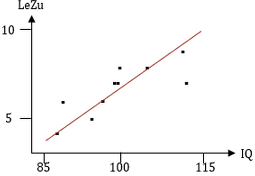
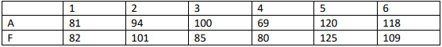

Übung 04: Korrelation
1 Aufgabe
In einer Stichprobe (N=10) wurden Daten zur Lebenszufriedenheit (auf einer Skala von 1-10) und zur Intelligenz erhoben.
| Person | Lebenszufriedenheit | Intelligenz |
|---|---|---|
| 1 | 7 | 113 |
| 2 | 5 | 95 |
| 3 | 8 | 100 |
| 4 | 7 | 98 |
| 5 | 6 | 89 |
| 6 | 8 | 105 |
| 7 | 9 | 112 |
| 8 | 4 | 87 |
| 9 | 6 | 97 |
| 10 | 7 | 99 |
a) Stelle die Daten in einem Streudiagramm dar.

b) Kann man einen Pearson Korrelationskoeffizienten berechnen? Welche Annahme müsste man ggf. treffen? Begründe deine Antwort!
Drei Voraussetzungen müssen erfüllt sein, damit eine Pearson-Korrelation berechnet werden kann:
- Der Zusammenhang wird nicht zu stark durch einen nicht-linearen Anteil dominiert. Check.
- Es gibt keine zu starken Ausreißer. Check.
- Intervallskalenniveau. Hier muss man die Annahme treffen, dass Lebenszufriedenheit-Ratings und IQ intervallskaliert sind. In der Praxis wird diese Annahme in der Regel gemacht. Insofern ebenfalls: Check.
2 Aufgabe
In einer Studie wurden 6 Studierende einem Aggressionstest und einem Frustrationstoleranztest unterzogen.
| Aggressionstest | Variable \(X\) | hoher Punktwert bedeutet hohe Aggressivität |
| Frustrationstoleranztest | Variable \(Y\) | hoher Punktwert bedeutet niedrige Frustrationstoleranz |

a) Berechne die Kovarianz
Berechnung des Mittelwertes: \[ \bar{x} = \frac{1}{n}\sum_{i=1}^{n}x_i = \frac{1}{6}\left(81+94+100+69+120+118\right)=97 \]
\[ \bar{y} = \frac{1}{n}\sum_{i=1}^{n}y_i = \frac{1}{6}\left(82+101+85+80+125+109\right)=97 \]
\[ \begin{aligned} & \hat{Cov}(X,Y) = \frac{1}{n-1}\sum (x_i-\bar{x})(y_i-\bar{y}) = \\ &= \frac{1}{5}\Big[(81-97)\cdot(82-97)+(94-97)\cdot(101-97)+(100-97)\cdot(85-97)+ ... \\ & ... + (69-97)\cdot(80-97)+(120-97)\cdot(125-97)+(118-97)\cdot(109-97)\Big] = \\ &= \frac{1}{5}\Big[240-12-36+476+644+252\Big] = 312.79 \end{aligned} \]
a) Berechne den Pearson-Korrelationskoeffizienten
Die Formel für die Pearson-Korrelation lautet:
\[ \hat{\rho} = \frac{\hat{Cov}(X,Y)}{\hat{\sigma}_x\hat{\sigma}_y} \]
Den Zähler haben wir schon berechnet, nun betrachten wir den Nenner:
\[ \begin{aligned} \hat{\sigma}_x\hat{\sigma}_y &= \sqrt{\frac{1}{n-1}\sum\left(x_i-\bar{x}\right)^2}\sqrt{\frac{1}{n-1}\sum\left(y_i-\bar{y}\right)^2} = \\ &= \frac{1}{n-1}\sqrt{\sum\left(x_i-\bar{x}\right)^2\sum\left(y_i-\bar{y}\right)^2} \end{aligned} \]
Berechnung von \(\sum\left(x_i-\bar{x}\right)^2\) und \(\sum\left(y_i-\bar{y}\right)^2\):
\[ \begin{aligned} & \sum\left(x_i-\bar{x}\right)^2 = \\ & = (81-97)^2+(94-97)^2+(100-97)^2+(69-97)^2+(120-97)^2+(118-97)^2 = \\ & = (-16)^2+(-3)^2+3^2+(-28)^2+23^2+21^2 = \\ & = 256 + 9 + 9 + 784 + 529 + 441 = 2028 \end{aligned} \]
\[ \begin{aligned} & \sum\left(y_i-\bar{y}\right)^2 = \\ & = (82-97)^2+(101-97)^2+(85-97)^2+(80-97)^2+(125-97)^2+(109-97)^2 = \\ & = (-15)^2+4^2+(-12)^2+(-17)^2+28^2+12^2 = \\ & = 225 + 16 + 144 + 289 + 784 + 144 = 1602 \end{aligned} \]
Damit gilt:
\[ \begin{aligned} \hat{\sigma}_x\hat{\sigma}_y &= \frac{1}{n-1}\sqrt{\sum\left(x_i-\bar{x}\right)^2\sum\left(y_i-\bar{y}\right)^2} = \\ &= \frac{1}{6-1}\sqrt{2028\cdot1602} = \frac{1}{5}\sqrt{3248856} = \frac{1802.46}{5} = 360.49 \end{aligned} \]
Der Korrelationskoeffizient ergibt sich somit zu:
\[ \hat{\rho} = \frac{\hat{Cov}(X,Y)}{\hat{\sigma}_x\hat{\sigma}_y} = \frac{312.79}{360.49} = 0.87 \]
3 Aufgabe
In der Folgenden Tabelle wird die Reaktionszeit von Computerspielern mit Ihrem Alter dargestellt.
| Reaktionszeit (score) | Alter(Jahre) |
|---|---|
| 12 | 14 |
| 15 | 25 |
| 17 | 20 |
| 18 | 35 |
| 20 | 45 |
| 21 | 30 |
| 22 | 60 |
| 26 | 95 |
a) Transformiere beide Variablen in Rangvariablen.
| Reaktionszeit (score) | Rang (Reaktionszeit) | Alter (Jahre) | Rang (Alter) |
|---|---|---|---|
| 12 | 1 | 14 | 1 |
| 15 | 2 | 25 | 3 |
| 17 | 3 | 20 | 2 |
| 18 | 4 | 35 | 5 |
| 20 | 5 | 45 | 6 |
| 21 | 6 | 30 | 4 |
| 22 | 7 | 60 | 7 |
| 26 | 8 | 95 | 8 |
b) Berechne die Spearman Korrelation.
\[ \hat{\rho}_s=\frac{\hat{Cov}(R(X), R(Y))}{\hat{\sigma}_{R(X)}\hat{\sigma}_{R(Y)}} \]
Separate Berechnung von \(\hat{Cov}(R(X), R(Y))\), \(\hat{\sigma}_{R(X)}\) und \(\hat{\sigma}_{R(Y)}\):
\[ \hat{Cov}(R(X), R(Y)) = \frac{1}{n-1}\sum (R(x_i)-\bar{R}_x)(R(y_i)-\bar{R}_y) = 5.43 \]
Hinweis: wenn jeder Rang nur einmal vorkommt (d.h. keine Rangbindungen), dann müssen \(\hat{\sigma}_{R(X)}\) und \(\hat{\sigma}_{R(Y)}\) identisch sein: \[ \hat{\sigma}_{R(X)} = \hat{\sigma}_{R(Y)} = 2.45 \]
Einsetzen:
\[ \hat{\rho}_s=\frac{\hat{Cov}(R(X), R(Y))}{\hat{\sigma}_{R(X)}\hat{\sigma}_{R(Y)}} = 0.90 \]
4 Aufgabe
Zwei Ärzte bewerten unabhängig voneinander die körperliche Gesundheit einer Patientenstichprobe.
| Index Patient | Bewertung durch Arzt 1 | Bewertung durch Arzt 2 |
|---|---|---|
| 1 | 1 | 3 |
| 2 | 2 | 1 |
| 3 | 3 | 4 |
| 4 | 4 | 2 |
| 5 | 5 | 6 |
| 6 | 6 | 5 |
a) Berechne die Anzahl konkordanter Wert-Paare und diskonkordanter Wert-Paare.
\[ K= 11;\quad D= 4 \]
b) Berechne Kendall’s Tau.
\[ \hat{\tau} = \frac{K-D}{K+D} = 0.47 \]